Mode, style et histoire
🔹 Tbilissi – La capitale de la Géorgie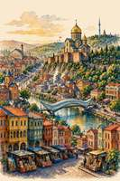
Tbilissi est, bien sûr, la capitale. Mais la qualifier simplement de « capitale », c'est comme appeler un khinkali un « ravioli ». Formellement proche, mais en réalité une absurdité. C'est une ville où chaque fissure dans l'asphalte sait quelque chose que nous ignorons. Où l'antiquité étreint la modernité si fort qu'on ne sait plus qui est le plus âgé. Et la nature autour — comme un décor de film où le héros doit forcément tomber amoureux.
Tbilissi vous accueille non comme un guide strict, mais comme cet oncle géorgien qui verse d'abord du vin et puis demande votre nom. Ici, le temps suit ses propres règles : vous prévoyez de voir un bâtiment, et vous vous réveillez trois heures plus tard dans une cave avec un khachapuri et un nouvel ami nommé Guia. Les forteresses anciennes rappellent les rois et les caravanes, les places vibrent de musique de rue (parfois même en harmonie), et les balcons des vieilles maisons pendent au-dessus de vous comme s'ils allaient raconter quelques commérages séculaires. Et oui, l'Orient et l'Occident se sont rencontrés ici et, semble-t-il, sont devenus amis pour toujours. On le voit dans les sculptures sur les portes, l'odeur des épices au marché, et la façon dont une église orthodoxe, une mosquée et une synagogue coexistent sans dispute. Et la nature autour de Tbilissi est une autre histoire. La ville ne se tient pas seulement sur des collines, elle s'y allonge, respire et parfois même glisse — mais tient bon. La Koura serpente au centre comme un serpent qui a oublié où il allait. Les sources thermales réchauffent la terre (et vos pieds), le climat gâte presque toute l'année, et les vues depuis les collines sont si belles que même Instagram avale sa salive. Bref, Tbilissi ne se repose pas — elle vous recharge. Et elle le fait avec un humour si généreux que repartir triste est tout simplement impossible. |
🔹 « La forteresse imprenable » (Forteresse de Narikala) Forteresse de Narikala – coordonnées GPS : 41.6882188, 44.8071236. 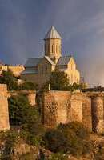 Quelque part en contrebas, la ville bourdonne — des échos de klaxons et de rires montent. Vous avez le choix : monter à pied par le sentier rocailleux et sinueux, en sentant chaque pierre et chaque chardon sous vos semelles, ou tricher un peu et prendre le téléphérique pour seulement 2 laris. Je conseille le téléphérique — ne serait-ce que pour le frisson de planer au-dessus des toits de tuiles. Mais une fois sur l'ancienne terre de Narikala, le temps semble s'enrouler en anneau. Cette forteresse a plus de 1500 ans. Pas de chemins aménagés — seulement de l'herbe sauvage et des murs à moitié ruinés qui ont vu l'essor et la chute de grands empires. Vous trouvez un endroit sur le bord, reprenez votre souffle et regardez en bas. Tbilissi s'étale à vos pieds comme une mosaïque vivante : ruelles étroites, balcons fantaisistes, dômes dorés d'églises et le ruban miroitant de la Koura. Le vent siffle parmi les pierres anciennes, et un instant, il semble qu'un gardien mythique puisse s'élever des ruines. Ce lieu est sauvage, antique et d'une beauté incroyable. |
🔹 Le géant blanc (Cathédrale Sameba — Cathédrale de la Sainte-Trinité) Cathédrale Sameba – coordonnées GPS : 41.697498, 44.816666. 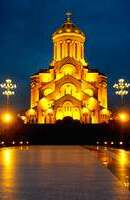 Impossible de la manquer. Où que vous soyez à Tbilissi, cette silhouette blanche et massive s'élève au-dessus de la ville comme un géant endormi sur une colline. Mais en vous approchant, le géant semble s'éveiller. La cathédrale Sameba, haute de 101 mètres, est la plus haute église de Géorgie ; elle ne se dresse pas simplement — elle s'élance majestueusement vers le ciel. À l'intérieur, le bruit de la ville s'éteint. L'air est frais et imprégné d'encens. Les yeux s'habituent à la pénombre et un tableau étonnant se dévoile : sculptures ciselées, icônes dorées et fresques qui semblent raconter leurs histoires sans mots. Près de l'autel repose une énorme Bible manuscrite — si imposante et détaillée qu'à côté, on se sent petit, et ce sentiment apporte une merveilleuse sérénité. Pas besoin d'être croyant pour ressentir quelque chose ici. Ce lieu est empli de paix, de fierté et de recueillement silencieux. |
🔹 Une bouffée d'air frais (Lac Lissi) 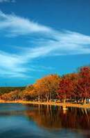 Après de longues promenades sur les pavés, vos pieds réclament de la douceur. Le lac Lissi est la solution parfaite. Ce lieu, à deux pas du centre, est une véritable oasis où Tbilissi peut reprendre son souffle. On peut y louer un pédalo et glisser tranquillement sur l'eau, en observant les canards insouciants. Sur la rive, des familles pique-niquent sur l'herbe, des enfants font du kart, et les amateurs de sport s'essayent en été aux parcours acrobatiques dans les arbres. Vous vous asseyez sur un banc à l'ombre, fermez les yeux et laissez le silence vous envelopper. Pas de klaxons, pas de foules bruyantes — seulement le bruissement des feuilles et le clapotis de l'eau. Ce n'est ni un musée ni un temple, mais un coin de nature pur et simple, comme un vrai cadeau. |
🔹 « Un village dans la ville » (Musée ethnographique) Adresse : Tbilissi, Avenue du Lac des Tortues 1 (près du parc Vake et du Lac des Tortues). 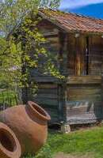 C'est un musée inhabituel : pas de vitrines en verre, pas de barrières en velours. C'est un vrai monde de conte de fées en plein air, niché dans le parc Vake, près du Lac des Tortues. Vous déambulez dans une forêt de villages miniatures, chacun apporté d'une région différente de Géorgie. L'un évoque une cabane de berger de montagne, l'autre une maison de vigneron des régions orientales. En regardant par les vieilles fenêtres et en touchant les outils en bois rugueux, vous imaginez vivement comment, il y a cent ans, les grands-mères faisaient du pain dans ces mêmes pièces. Ce n'est pas seulement de l'histoire — c'est une machine à remonter le temps. Et comme les arbres bruissent et les oiseaux chantent alentour, la visite du musée ressemble moins à un cours ennuyeux qu'à un agréable pique-nique en compagnie du passé. |
🔹 Pas ce Sydney
Un couple a réservé avec enthousiasme des vols bon marché pour Sydney — ils imaginaient l'océan, l'opéra et des kangourous en casquette. Dans l'avion, ils ont appris avec un léger frisson que la destination était le minuscule Sydney canadien en Nouvelle-Écosse, où la principale attraction est un seul feu tricolore et un élan très perplexe. Au lieu du surf, une pluie douillette et des conversations sur le sirop d'érable les attendaient.
|
🔹 Il faut finir les ruines de toute urgence 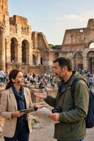 Un touriste à Rome a examiné consciencieusement les ruines romaines pendant une bonne demi-heure, en fronçant les sourcils et en secouant la tête. Puis il s'est jeté sur le guide avec une indignation sincère : « On ne pouvait pas finir correctement ? Les billets étaient chers, et ce n'est qu'un chantier du premier siècle ! Où est la rénovation promise ? » Le guide a poliment proposé d'appliquer du mastic sur la colonne. |
🔹 Le redoutable prédateur nocturne 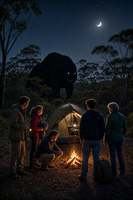 Dans un camping australien, la panique a éclaté en pleine nuit : des touristes ont jailli de leurs tentes en hurlant, jurant qu'un monstre géant sifflait, grognait et grinçait des dents derrière la toile. Le matin, il s'est avéré que la bête féroce était un koala somnolent qui essayait simplement de s'éclaircir la gorge des feuilles d'eucalyptus. Les touristes ont tellement ri que les kangourous ont eu peur. |
🔹 Vue invisible 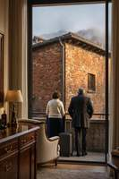 Un couple a dépensé ses dernières économies pour une chambre dans les Alpes avec « vue garantie sur les sommets enneigés ». Pendant sept jours, leur fenêtre était ornée d'un brouillard laiteux impénétrable — très romantique. Ce n'est que le dernier jour, valises déjà faites, que le brouillard s'est dissipé théâtralement et qu'ils ont enfin vu la vue tant attendue… un mur de briques de l'immeuble voisin avec une pancarte « Vue non incluse dans le prix de la chambre ». |
🔹L'astuce des pourboires 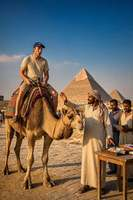 En Égypte, un touriste s'est vu proposer avec un sourire malicieux une balade à dos de chameau pour seulement 1 dollar. Il s'est réjoui comme un enfant et a grimpé sur la bosse. La balade fut féerique, mais au moment de descendre, le chamelier l'a aimablement informé : « La descente est une option séparée. Seulement 50 dollars. » Le jeune homme est resté longtemps sur le chameau à demander s'il y avait une réduction pour ceux qui accepteraient de rester en selle à vie. |
🔹 Une petite confusion 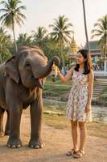 En Thaïlande, une fille a tendu tendrement une banane à un éléphant, rêvant du selfie parfait. L'éléphant, d'une politesse imperturbable, a accepté l'offrande, attrapant avec sa trompe non seulement le fruit mais aussi ses lunettes de soleil tendance, et a envoyé le tout dans sa bouche avec visible plaisir. Après ce déjeuner, il s'est éloigné fièrement vers le coucher du soleil, laissant la fille dans l'obscurité totale et avec un nouvel amour pour la nature. |
🔹 Bronzage marin
|
🔹 Visiteur nocturne
|
🔹 Bagage autopropulsé
|
🔹 Cascade Kldeisi, Kvemo Kartli, Géorgie 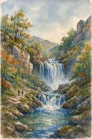 Coordonnées GPS : 41.6441, 44.3944 (coordonnées approximatives des gorges de Kldeisi).
La cascade Kldeisi est située dans la région de Kvemo Kartli (Géorgie), près du village de Mali-Kldeisi (Petit Kldeisi) dans la municipalité de Tetritskaro. Informations clés : Localisation : Région de Kvemo Kartli, municipalité de Tetritskaro, près du village de Patara-Kldeisi (Petit Kldeisi), à environ 1,5–2 heures en voiture de Tbilissi, à environ 1 380 mètres d'altitude. La cascade est cachée dans une vallée boisée. L'endroit est sauvage, non aménagé et parfait pour le trekking.
Particularités : Un coin de nature pittoresque, particulièrement beau au printemps, lorsque le paysage est d'un vert frais. Cet itinéraire est prisé des clubs de randonnée et des amateurs de plein air.
Difficulté : Moyenne ; la distance totale aller-retour est généralement d'environ 6 à 7 kilomètres.
À voir à proximité : Outre la haute cascade, dans les environs des villages de Kldeisi, on peut voir des églises médiévales (comme l'église de la Vierge des Xe–XIe siècles) et des grottes réfrigérées naturelles (Chorkhebi).
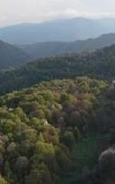 Comment y aller et conseils utiles : La route traverse les régions historiques pittoresques de Trialeti.
La meilleure période est le printemps (surtout mai) : la cascade est la plus abondante et la nature la plus éclatante.
Comme les routes du village ne sont pas goudronnées, il est recommandé de venir avec un véhicule à garde au sol élevée ou dans le cadre d'une randonnée organisée.
Le secret de la cascade Kldeisi Mon aventure a commencé dans l'attente de contempler la beauté de la nature, mais j'ai vite compris. Le sentier forestier baigné de soleil me conduisait à travers les paysages historiques de Trialeti. L'itinéraire d'environ 6–7 kilomètres (aller-retour), de difficulté moyenne, serpentait dans la gorge densément boisée, comme gardant jalousement ses trésors. 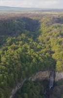 En marchant, je ne pouvais me défaire du sentiment que les rochers eux-mêmes m'observaient. Le nom « Kldeisi » signifie « rocheux » en géorgien, et on comprend pourquoi. De part et d'autre s'élevaient des falaises calcaires formant un amphithéâtre naturel qui amplifiait le grondement de l'eau. Enfin, j'ai tourné un angle — et je l'ai vue. La cascade Kldeisi se précipitait sur les pierres antiques, formant un magnifique rideau chatoyant au soleil. L'eau tombait dans un bassin clair entouré de mousse verte. C'était un spectacle de pure magie primitive. 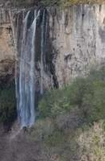 « Réfrigérateur naturel » (grotte Chorkhebi) : La plus grande merveille de ce lieu, dont les bergers locaux racontent des histoires depuis des siècles. Dans les fissures et grottes de basalte près de la cascade, l'air froid est si bien retenu que des formations de glace ne fondent même en été. Les habitants utilisaient ces congélateurs naturels pour conserver les produits laitiers.
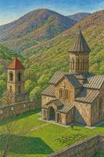 Églises médiévales gardiennes : Sur le chemin de la cascade, on trouve les ruines d'une ancienne forteresse, l'église Saint-Georges et l'église de la Vierge (Xe–XIe siècles) avec des inscriptions anciennes en alphabet asomtavrouli. Les habitants croyaient que ces sanctuaires protégeaient la gorge des ennemis. Soudain, j'ai senti que la cascade n'était plus pour moi seulement une merveille de la nature — elle était devenue un gardien. Les embruns frais sur mon visage et le fracas de l'eau tombaient maintenant autrement, comme imprégnés du souffle de l'histoire et de l'esprit du mystère. Le retour de la montagne fut empreint de révérence : je marchais comme sur les traces d'une légende, et dans mon cœur continuait de résonner la légende de la cascade Kldeisi. |
Change page language: |